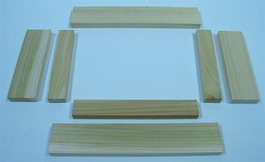
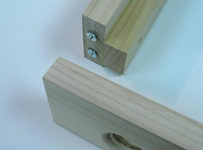
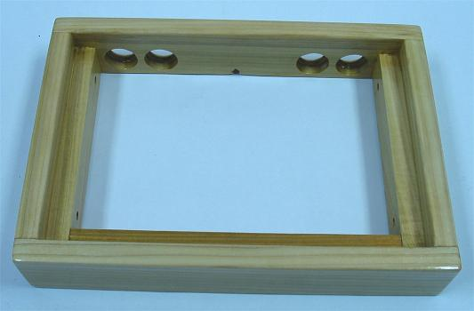
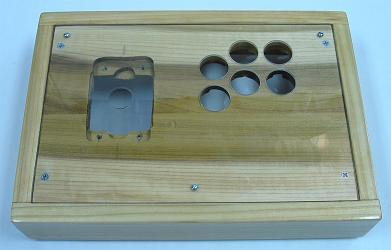
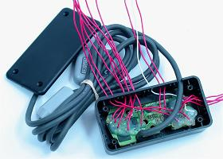
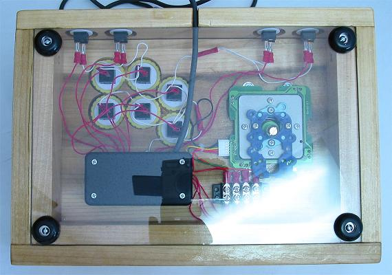
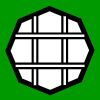
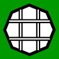

Example Detailed Controller Build
This section documents an joystick controller build and goes into great detail about the design and choices made in the process. It is a fairly comprehensive look at making one.
Reading through the process is a good way to familiarize yourself with putting a controller together. Learning details of successes and mistakes can help make a better controller.
This is an early example of my work, and much better can be done, but this can help in getting the right mindset.
Simple Poplar
Completed April 2008
Part of the goal in making this controller was to use some fairly humble means. No fancy jigs or power saws. Far and away, the only expensive piece of equipment was the router and bits I found at good prices. Another goal was to make an independent box and panel that could easily be augmented or replaced. The project turned out more difficult than I though because joining and aligning the boxes was not as easy as I thought it would be. Using smaller blocks in the corner of each inner part of a single box is much easier than this design.
The devices and wiring:
- 1 Seimitsu LS-32 S-Plate (also Sanwa JLF compatible)
- 1 Wire Harness
- 1 Seimitsu White 35mm Ball Top
- 6 Seimitsu White PS-14-GN 30mm Buttons
- 4 Seimitsu White PS-14-DN 24mm Buttons
- 1 PS1 Extracted Soldered PCB
- ~15' 20 AWG Insulated Wire (much cut away)
- 1 Project Box 4"x2"x1"
- 1 Four-Terminal Strip
- ~30 Various Connectors
The joystick designed here is a 1-3/4 box, two-layer routed panel, poplar controller.
The basic measurements for the materials:
- 1 12" x 8" x 3/4" Wood
- 2 12" x 8" x .093" Acrylic Glass
- 2 8" x 1-1/2" x 3/4" Wood
- 2 8" x 2-1/2" x 3/4" Wood
- 1 10-1/2" x 1-1/2" x 3/4" Wood
- 2 13-1/2" x 2-1/2" x 3/4" Wood
The same basic measurements for the materials in approximated centimeters:
- 1 30cm x 20cm x 2cm Wood
- 2 30cm x 20cm x .25cm Acrylic Glass
- 2 20cm x 4cm x 2cm Wood
- 2 20cm x 6.5cm x 2cm Wood
- 1 26cm x 4cm x 2cm Wood
- 2 34cm x 6.5cm x 2cm Wood
The original purchased materials:
- 1 24" x 11-1/4" x 3/4" Poplar (MDF would probably have been better)
- 1 24" x 18" x .093" Lexan
- 2 24" x 1-1/2" x 3/4" Poplar (1 48" board would have been better)
- 2 24" x 2-1/2" x 3/4" Poplar (1 48" board would have been better)
The wood was purchased from Lowes and the glass from Home Depot, all together about $25 with excess materials leftover at the finish.
Controller Box
To start, the wood was cut for the box to the needed dimensions using a hand saw. I marked and made the lines for the cuts using a pencil. I made sure the cuts were straight by clamping another couple boards with good cuts to the board being cut as guides. I cut with slight excess to avoid short boards that could not be fixed. The cuts were not entirely perfect, so I sanded the ends against some 60 grit sandpaper resting on a flat piece of scrap wood.

I made sure the boards fit together well; a couple needed a little additional sanding to tweak their size. I then checked the dimensions of the inside to see if the assumed sizes would fit; they did. I did the basic cutting for the main part of the panel and the two sheets of acrylic glass. I used the same guiding techniques on the main panel.
I marked the acrylic with marker (it has a protective coating that needs to stay until it is completely cut). I used a metal straight edge and an acrylic cutting knife to cut it starting with low force to establish a groove and then moderate to establish a good groove; I used about 30 runs all together. I then bent the sheet (far and hard) with the seam going outward until it snapped (and it was loud; maybe should have had ear protection).
I again checked to make sure these would fit the box blocks; they could, but needed a little extra sanded to fit when the box was done.
With the rough cuts made, I next set some of the attachments for dowels (you do not want to do them all at once because they may not fit well later on). First I set the connections for the three inner pieces (which are the main pieces for the box because the panel rests on them, and the feet attach on the bottom of them). I wanted to make sure they fit well together so I clamped the pieces to a board with a good right angle and drilled though the side pieces into the front piece.
Now, to set attachments for each inner board to its corresponding outer board, I had to establish how high I wanted the insides relative to the outsides. The sides are 2-1/2" high while the insides along with the panel are 1-1/2" + 3/4" = 2-1/4" high. That leaves 2-1/2" - 2-1/4" = 1/4" left over. To be safe I gave each side half the remainder, 1/4" / 2 = 1/8" each; this was a good decision because each acrylic panels fit nicely on the top and bottom of the box in the end.
I drew a line 1/8" from the bottom along each outer side. I then clamped each inner piece to the outer piece at the precise height. I drilled two holes through the inner pieces and 1/2" into the outer pieces for the dowels to fit. It left visible holes, but I did not want to sacrifice precision and do not have a drill press or dowel kit for this. I could have also used tapered screws for this job just as easily for this connection.
I then glued and clamped the pieces with dowels together and let them dry for a few hours each. I cleaned away glue with a dry cloth early on and this left a little dark tone on some parts; some masking tape would have been nice to prevent this. After they dried, I could have easily sawed some dowels and put some plugs in the entry holes (this could be done with screws too), but I kind of liked the holes, so I left them.
Again, it was time to see how the pieces would fit together with dowels sitting in the inner box pieces. A few parts were slightly off, so I again smoothed them with 60 grit sandpaper resting on some scrap wood. The three double-pieced parts of the box were ready to come together, so it was time to tweak the other side for buttons, a cord, and attachment.
I centered each button hole 7/8" up from the bottom so they would be midway between the control and bottom panels, and proportionally away from the sides of the controller where the sides need to attach. I wanted four buttons so that a total of ten buttons would cover all the Playstation controller's functions. I centered the cord hole in the middle 1/4" up so it would be right above the bottom panel.
For precision, I started with a 1/16" bit for each hole as a pilot, making sure the drill was level as I made each. (Note that this first hole is essential to make well as subsequent drilling will be guided by it.) Since the drill I was using was not entirely precise, I entered through the outside so the buttons would hold an even location where they are visible and used.
I transitioned to 1/4" to fit the cord and the arbor on the hole saw. With the board secured on a piece of scrap wood, I made each 24mm hole. Each took a while because my drill is not very strong and the hole saw and hole had to be cleaned of saw dust often. When the holes were done, I sanded each with some sandpaper on my fingertip to get them smooth and ready for routing.
To make the face on the buttons look nice, and be sunk so they are not accidentally hit, I used a 3/16" beading bit (roundover bit with a 1/8" smaller bearing); this fit the faces of the buttons nicely. I then needed a groove for the buttons to fit on the back, and the beading bit is not big enough to fit the nuts. I could have delicately done this by hand, or done this well if I could find an appropriate rabbeting bit, but I decided to cheat a bit. I removed the bearing on a trim bit and used the attachment point as a guide instead; it was kind of sloppy and left some burning, but it worked. I again sanded it clean with paper on my fingertip.
For the cord hole, I wanted to make a keyhole where the cord could barely squeeze through the bottom into the 1/4" hole. I sawed down the middle to the hole and wrapped a ruler with sandpaper and filed it until the cord barely fit through. An accidental side-effect put a groove in the top of the inside of the keyhole to make it look like a bishop piece. Oh well.

In attaching the back to the side pieces, I did not want any joints to show. I got some dowel centers to help in setting the holes. I started with the holes on each side piece making them as level as I could. I inserted the centers and laid the pieces at a right angle on a board and slid them together to make some groove in which to insert the dowel holes. I then made holes 1/2" deep as level as I could into the grooves.
Again I then tested how everything fit together. The dowel holes were a little off and I had to tweak them and make them a bit less snug. I then tested how the main panel fit into the box. It was a bit big and I had to take a while sanding it with 60 grit sandpaper taped to a block of scrap wood. I wanted the panel ready so I would have a gauge in setting the box while it dried.
With everything in the box ready to come together, I got the pieces, glue, dowels, towels, paper, clamps, scrap wood, and a flat surface ready to put things together. Since I did not have many large clamps, I started with the front area only. I covered corners with paper on the main panel so things could be brought together evenly. I added a thin layer of glued everywhere things would touch and set the front and side pieces even together on a flat surface. Make very certain that things are set right because it cannot be unglued and you do not want a parallelogram or other bad shape. Be very ready, and maybe practice a bit without glue, before bringing things together.
After the front dried, I did the same things with the back piece. I let the box dry for 24 hours. After everything dried, it was set evenly, but a lot of excess glue dried around the joints. I wish I set masking tape, or peeled away excess early on. I had to get a chisel and remove a lot of excess glue where sandpaper could not reach. This was a pain.
I then sanded with the grain in and around the entire box using 220 grit sandpaper taped to a block of scrap wood. I was originally going to use a 1/2" roundover on all the sides of the box (excluding the bottom of the back), but I liked the simple look of the box and decided to keep it. The controller would have looked much smaller if I routed the edges. I just used the sandpaper to smooth each corner so the entire box had a good feel.

I decided it was time to finish the box. I could have gone with paint or stain or oil or wax, but I made the choice just to use some polyurethane. I did three thin coats, letting each dry for almost a day and sanding with 220 grit sandpaper between each, making sure the final coat was extra smooth. Since it was oil-based, the wood took on more of an amber tone. One thing that I did not realize was that ends tend to get darker because of their open fibers; it could have been prevented with conditioner or filler, but I like how it looks anyways. The box was now done.
Controller Panels
With the box done, it was time to center on the panels. Testing the fit of each acrylic panel on the box, each was a bit large. I had to take a lot of time to sand each panel with 60 grit sandpaper taped to a block of scrap wood. I made sure the film stayed on the glass and I did not sand the face. Once they had the proper dimensions, I could work on setting and installing the devices.
So I could work the two layers of the control panel simultaneously, I placed the screws that hold them together early using 3/4" non-tapered screws while they were set in the box. I placed them 3/4" from the sides. I piloted in the holes slowly small to large so the glass would not crack, finishing one screw at a time so they would set together well. I only used three because I did not want screws getting in the way of where I rest my wrists and palms.
I maybe should have put two screws at the front near each other to be safe, but the glass did end out flush with the box. I maybe also should have done the screws securing the main panel to the box first to be sure things would fit together well. Things turned out well anyways. I could have also just used screws that would go through the acrylic all the way to the box (which would have made augmenting the controller easier and been the best choice given the inside design).
Using the clustered template I made and prefer, I printed out the design. I cut it smaller and positioned it on the box and panel until it suited a position I liked. I then taped it down and circled where I wanted the joystick. (I like the joystick near because I rest the side of my palm on the panel and the tip of my thumb on top of the joystick.)
I removed the panels from the box so I could work the holes into them on a piece of scrap wood. I started with 1/16" holes for each button and the joystick as centered and level as I could make them through the top of the panel. I incrementally transitioned each up to 1/4" for the 1/4" arbor.
I clamped the panel securely and used a 24mm hole saw for the joystick and a 30mm hole saw for the buttons. Again, it took a while because the cuts had to be cleaned routinely. I then separated the two panels. I went around the edges that had been cut on the acrylic glass with my finger nail and the tip of a screwdriver carefully scraping stray plastic away. The top acrylic panel was then done and I could remove the protective film. I sanded the holes in the main panel clean using sandpaper on my fingertip.

I outlined where the joystick would be routed into the panel. Because the hole for the joystick will be carved away, I made some extended lines to show where the joystick needs to be centered. The goal was to route the panel in a way that both a JLF and an LS-32 (S-plate) could fit into the panel. I wanted to route a 2-1/2" square into which both bodies could fit, and to route about 8mm deep into the top where the joystick plate rests, each using a thin straight bit. Then a little tweaking would be done to fit the other miscellaneous parts of each joystick. The button holes would be routed the same way as the side buttons using a trimming bit missing its wheel a little over 1/2" into the bottom of the panel.
The process of doing this, however, took a lot of tweaking because my measurements were not exact to the joysticks and some other problems occurred.
While routing the bottom of the buttons, the panel was a bit fragile. A small chip of the support for the buttons came out while routing. It was not a big deal since the upper part of the panel was not harmed, but I feel a little lucky a larger chunk did not come out. Either being sure to transition out material slowly or using MDF would be a good idea in light of this. I filled the small chip using glue mixed with sawdust.
Working the joystick area had some problems too. One main problem was not making the hole for the body big enough. I had to wrap a piece of wood and sand the hole with 60 grit sandpaper for a while to fit the LS-32. In retrospect too, I should have made the hole even bigger so the LS-40 could fit in the panel as well.
Another problem I had in carving the joystick area was I cut excessively in a couple areas. I slipped and made the area for the JLF to fit the top a little large. Later I took way too much area out in making space for the LS-32 switches. The lesson was that I needed more exact markings and needed to take out bits of wood in smaller increments. So mark things exact and remove a little bit at a time in each sweep of the router when doing the panel.
I also made the mistake of being slightly careless with the router and a small divot was put in the top of the panel.
Because I took out an excessive amount for microswitches and bolts had to run through the locations, I had to refill a couple spots. I cut out a couple small pieces of wood and contoured the pieces until they fit nicely the spots I wanted to fill. I again mixed saw dust with glue to place the pieces. (This fix occurred a bit later on.)
I lightly sanded the panel with 220 grit sandpaper on a block and put a single thin layer of polyurethane on the panel to make it a little stronger and not get affected by moisture. Unfortunately I found the panel was already slightly warped, but only about 1mm across the panel. This is another reason to use MDF for the panel. But the warp did not really affect the final product in any way.
Installing the joystick, I set the LS-32 in the panel and lined it up with the sides of the panel and centered between the markings. I used a pencil to shade in the inside ends of the mounting holes 40mm apart as 40mm works for the JLF as well. I used size 10 tapered bolts though size 8 non-tapered bolts would have been better because they adjust easier. I piloted and installed each bolt along with the plate one at a time starting with drilling 1/16" going to 11/64". The bolts fit very solidly and did not really need nuts or washers, but I added them anyways.

With the areas for the devices set, all that was left for this panel was the holes for securing the panel to the controller box. I used four 1-1/2" tapered screws. Each screws went through to one of the inner side panels which were set as the main structures of the box from the beginning. Again, each screw was piloted and installed one at a time to make the connection set well. Holes using a 1/4" drill about 1/4" deep were added at the top of each hole so the screws could sink into the panel and the acrylic layer could lay flat on the top.
Now to install the bottom panel. Like the control panel, I wanted to attached the feet to the inner sides. I set the bottom panel in place, got the rubber feet and some smaller screws, and marked the inside of each foot where it needed to be placed. Again, one at a time, piloting, I put the feet into the bottom. Since this panel is not as supported, I had to be careful that each foot installment kept the panel flat and in-line with the box. When this was done, I again shaved the sides with my finger nail and a screwdriver and was able to remove the protective film.
The design turned out structurally very well. The control panel is about as sturdy and precisely laid out as a panel can be. The only problem is that changing the joystick can take a while since all the buttons have to be removed in the process as well.
Controller PCB and Wiring
I could have used a designed PCB, but I decided early on I wanted to use a Playstation 1 PCB and cover all ten of its buttons.
Red 20 AWG wires were soldered to signal nodes more near the center of the PCB by putting solder on each connection part and then melting them together (excluding the left two buttons which had a couple detailed paths scratched for them). One white 20 AWG wire was soldered to the ground scratched near where the cord brings it into the PCB. All connections were reinforced using a glue gun. Excess and unnecessary areas of the PCB were cut away using a hack saw.
The PCB was small enough to fit into a 4"x2"x1" project box. I thought for a while how I was going to set things up and if I was going to use a terminal strip for all the signal wires. After a while, I realized I could drill holes in the project box and use those holes like an organized terminal strip. I organized the holes proportioned to the switches throughout the controller. I made another keyhole for the cord in the project box.

Making notes for the function of each wire and where I wanted each button to go, I threaded each wire through the appropriate hole in the project box. Because the 20 AWG wire was so rigid, it took a little while and some effort to thread all the wires through and get the PCB rested in the box. I was pretty rough on the wires, so it is a testament to the strength of the glued connections that it all still worked afterwards. Everything held pretty strong in the box and I felt no need for further reinforcement of the PCB or wiring.
To start wiring for the controller, I secured the project box to the bottom of the panel with a couple screws. If the box was too thick for the controller, I would have had to route a cove for it, but it was not. Since I was using a wire harness and different models of joysticks, I secured a four-terminal strip next to the project box also using screws.
I cut away excess wire where needed because I did not want it straying all over. All remaining connections were done using crimp-on connectors and terminal. I connected the directional signal from the PCB to the terminal strip using ring terminals since they would not need changing. I connected the signals on the wire harness for the joystick to the strip using spade terminals since they may need to be move around later (it happened to turn out they did not need to be moved).
I distributed the ground to the wire harness and the switches throughout the controller using butt connectors and chaining on the quick connects. Each individual signal remaining got a quick connect for its connection. The wiring was now complete.
To try everything out, I secured the main panel and started with the JLF joystick. I put the top acrylic panel over this and secured the buttons; the area to secure them is pretty snug so I used the tip of my mechanical pencil to turn the nuts. I connected the wire harness to the joystick and all the signal and ground quick connects to their corresponding button. I tried the controller out and a couple of the spade terminals for the directions had to be switched for the joystick to work right. With everything now working, the controller was pretty much complete.
Conclusion
Now I just had to insert a background for the control panel. I am a bit of a purist and went with a simple white piece of paper. First thing to do is secure the sheet between the two layers of the panel (this is easier when the joystick is not installed). You can then use a pencil to trace where the cuts will be made, but I decided just to cut it while it was in the panel.
I first tried to make the holes for the button and joystick using a hole saw; that pulled and tore paper out from between the panels, so I got a new piece of paper. I got a box-cutter and removed most of the insides on the holes, but left a bit since only most of the paper had to be removed on the holes. I cut away all the slack on the outside of the panel; if I had a design where all the panels were secured at once, I could have probably trimmed and taped the excess to the side of the panel and slid it in.
And so, now with a LS-32 and a background, the joystick controller is complete.

Anything I would change?
The controller is bigger than a lot of custom controllers tend to be. But I tend to play with my the palms of my hands resting and spanning a pretty large distance. I would maybe be willing to take about 1/2" off each side, but I am fine how it came out. About the smallest I would allow a standard control panel would be 11" by 7". It would look a lot smaller too if the edges were routed with a roundover or chamfer.
The panel is slightly warped and would either have been better with some MDF or a board verified and sealed level with a coating early on. I think the box straightens it a bit anyways and I do not feel the warp at all.
The exposed ends on the front and back corners are dark compared to the rest of the box. This could have been prevented with conditioner, but I like how it looks like this anyways.
I routed a bit much for the joystick in the panel. I should have practiced a little more first, made precise sizing with my pencil before routing, and slowly carved out the areas. But the panel turned out very strong and accurate anyways.
The 1-3/4 box design was more difficult than I thought it would be. It requires good precision and a little added effort. Using it depends on what you want in a controller.
All-in-all, the controller turned out very well.


 
